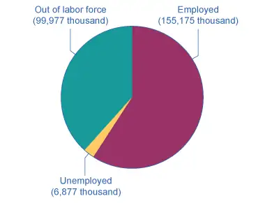
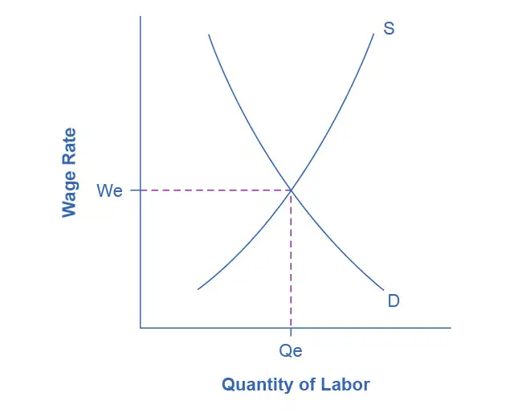
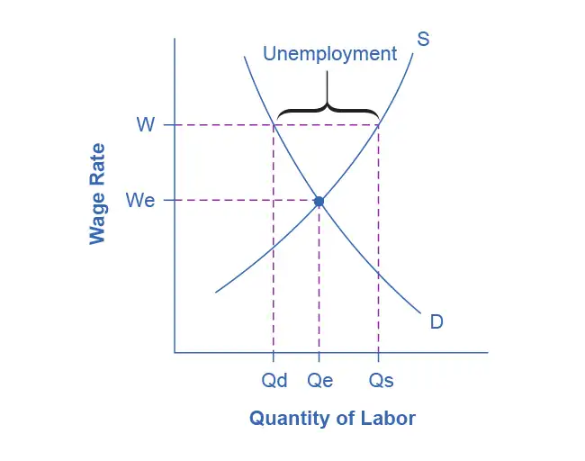
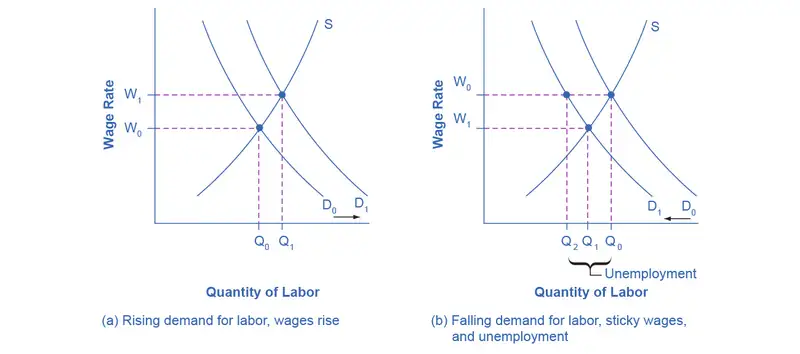
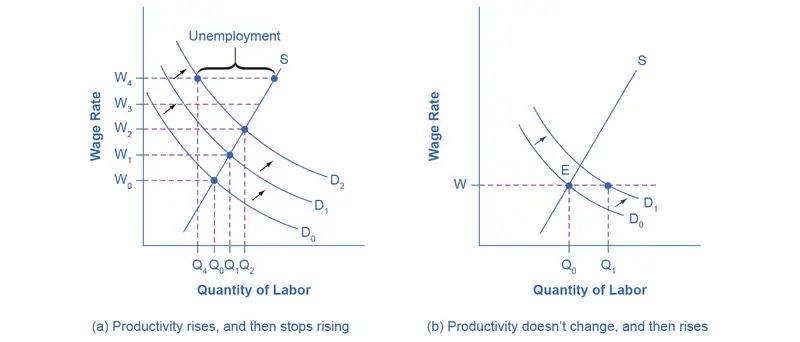
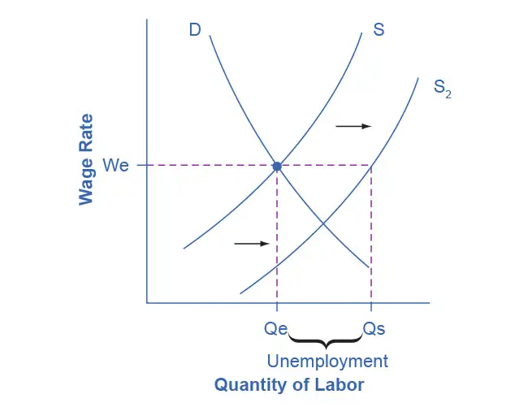

Chapter 21: Unemployment¶
Introduction¶
Bring It Home: Unemployment and the COVID-19 Pandemic: A Complicated Story
It was the most abrupt economic change in the post-World War II era. Between March 2020 and April 2020, the U.S. unemployment rate increased from 4.4% to 14.8%. As a result of the COVID-19 pandemic, millions of people were left without work as businesses shut down and people stayed home and cut their spending, especially on restaurants, tourism, and travel. As confidence and spending were slowly restored, and as the situation with the virus steadily improved, unemployment began to tick down. By 2022, with the availability of vaccines and boosters and other improved health measures, things were better still, but the presence of dangerous variants prevented a full return to normal.
The COVID-19 pandemic had other effects on the labor market as well. Labor force participation—the rate at which people are employed or actively searching for work—declined and as of early-2022 remained lower than it was in 2019. Some were forced to stop working because of school and childcare closures. Others were concerned about how safe their workplaces would be in the middle of a global pandemic. And still others simply chose to retire early. Labor force participation remains a sore spot in the labor market's recovery.
These two statistics—unemployment and labor force participation—show how complicated the labor market can be. As the unemployment rate declined through 2021, the disappointing statistics on labor force participation show weak points. One day you may have read a headline about how easy it was to find a job, and the next day a headline would describe how difficult it was for employers to find workers. By the end of this chapter, you will be in a much better position to make sense of these events.
Chapter Outline: Introduction to Unemployment
In this chapter, you will learn about:
- How Economists Define and Compute Unemployment Rate
- Patterns of Unemployment
- What Causes Changes in Unemployment over the Short Run
- What Causes Changes in Unemployment over the Long Run
Unemployment can be a terrible and wrenching life experience—like a serious automobile accident or a messy divorce—whose consequences only someone who has gone through it can fully understand. For unemployed individuals and their families, there is the day-to-day financial stress of not knowing from where the next paycheck is coming. There are painful adjustments, like watching your savings account dwindle, selling a car and buying a cheaper one, or moving to a less expensive place to live. Even when the unemployed person finds a new job, it may pay less than the previous one. For many people, their job is an important part of their self worth. When unemployment separates people from the workforce, it can affect family relationships as well as mental and physical health.
The human costs of unemployment alone would justify making a low level of unemployment an important public policy priority. However, unemployment also includes economic costs to the broader society. When millions of unemployed but willing workers cannot find jobs, economic resource are unused. An economy with high unemployment is like a company operating with a functional but unused factory. The opportunity cost of unemployment is the output that the unemployed workers could have produced.
This chapter will discuss how economists define and compute the unemployment rate. It will examine the patterns of unemployment over time, for the U.S. economy as a whole, for different demographic groups in the U.S. economy, and for other countries. It will then consider an economic explanation for unemployment, and how it explains the patterns of unemployment and suggests public policies for reducing it.
21.1 How Economists Define and Compute Unemployment Rate¶
Learning Objectives
By the end of this section, you will be able to:
- Calculate the labor force participation rate and the unemployment rate
- Explain hidden unemployment and what it means to be in or out of the labor force
- Evaluate the collection and interpretation of unemployment data
Newspaper or television reports typically describe unemployment as a percentage or a rate. A recent report might have said, for example, from September 2021 to October 2021, the U.S. unemployment rate declined from 4.8% to 4.6%. At a glance, the changes between the percentages may seem small. However, remember that the U.S. economy has about 162 million adults (as of the beginning of 2022) who either have jobs or are looking for them. A rise or fall of just 0.1% in the unemployment rate of 162 million potential workers translates into 160,000 people, which is roughly the total population of a city like Syracuse, New York, Brownsville, Texas, or Pasadena, California. Large rises in the unemployment rate mean large numbers of job losses. In April 2020, at the peak of the pandemic-induced recession, over 20 million people were out of work. Even with the unemployment rate at 4.2% in November 2021, about 7 million people who were looking for jobs were out of work.
Link It Up
The Bureau of Labor Statistics tracks and reports all data related to unemployment.
Who’s In or Out of the Labor Force?¶
Should we count everyone without a job as unemployed? Of course not. For example, we should not count children as unemployed. Surely, we should not count the retired as unemployed. Many full-time college students have only a part-time job, or no job at all, but it seems inappropriate to count them as suffering the pains of unemployment. Some people are not working because they are rearing children, ill, on vacation, or on parental leave.
The point is that we do not just divide the adult population into employed and unemployed. A third group exists: people who do not have a job, and for some reason—retirement, looking after children, taking a voluntary break before a new job—are not interested in having a job, either. It also includes those who do want a job but have quit looking, often due to discouragement due to their inability to find suitable employment. Economists refer to this third group of those who are not working and not looking for work as out of the labor force or not in the labor force.
The U.S. unemployment rate, which is based on a monthly survey carried out by the U.S. Bureau of the Census, asks a series of questions to divide the adult population into employed, unemployed, or not in the labor force. To be classified as unemployed, a person must be without a job, currently available to work, and actively looking for work in the previous four weeks. Thus, a person who does not have a job but who is not currently available to work or has not actively looked for work in the last four weeks is counted as out of the labor force.
Employed: currently working for pay
Unemployed: Out of work and actively looking for a job
Out of the labor force: Out of paid work and not actively looking for a job
Labor force: the number of employed plus the unemployed
Calculating the Unemployment Rate¶
Figure 21.2 shows the three-way division of the 16-and-over population. In November 2021, about 61.8% of the adult population was "in the labor force"; that is, people are either employed or without a job but looking for work. We can divide those in the labor force into the employed and the unemployed. Table 21.1 shows those values. The unemployment rate is not the percentage of the total adult population without jobs, but rather the percentage of adults who are in the labor force but who do not have jobs:

Table 21.1 U.S. Employment and Unemployment, November 2021 (Source: https://data.bls.gov)
| Total adult population over the age of 16 | 262.029 million |
| In the labor force | 162.052 million (61.8%) |
| Employed | 155.175 million |
| Unemployed | 6.877 million |
| Out of the labor force | 99.977 million (38.2%) |
In this example, we can calculate the unemployment rate as 6.877 million unemployed people divided by 162.052 million people in the labor force, which works out to a 4.2% rate of unemployment. The following Work It Out feature will walk you through the steps of this calculation.
Work It Out: Calculating Labor Force Percentages
How do economists arrive at the percentages in and out of the labor force and the unemployment rate? We will use the values in Table 21.1 to illustrate the steps.
To determine the percentage in the labor force:
Step 1. Divide the number of people in the labor force (162.052 million) by the total adult (working-age) population (262.029 million).
Step 2. Multiply by 100 to obtain the percentage.
To determine the percentage out of the labor force:
Step 1. Divide the number of people out of the labor force (99.977 million) by the total adult (working-age) population (262.029 million).
Step 2. Multiply by 100 to obtain the percentage.
To determine the unemployment rate:
Step 1. Divide the number of unemployed people (6.877 million) by the total labor force (165.052 million).
Step 2. Multiply by 100 to obtain the rate.
Hidden Unemployment¶
Even with the “out of the labor force” category, there are still some people who are mislabeled in the categorization of employed, unemployed, or out of the labor force. There are some people who have only part time or temporary jobs, and they are looking for full time and permanent employment that are counted as employed, although they are not employed in the way they would like or need to be. Additionally, there are individuals who are underemployed. This includes those who are trained or skilled for one type or level of work but are working in a lower paying job or one that does not utilize their skills. For example, we would consider an individual with a college degree in finance who is working as a sales clerk underemployed. They are, however, also counted in the employed group. All of these individuals fall under the umbrella of the term “hidden unemployment.” Discouraged workers, those who have stopped looking for employment and, hence, are no longer counted in the unemployed also fall into this group.
Labor Force Participation Rate¶
Another important statistic is the labor force participation rate. This is the percentage of adults in an economy who are either employed or who are unemployed and looking for a job. Using the data in Figure 21.2 and Table 21.1, those included in this calculation would be the 162.052 million individuals in the labor force. We calculate the rate by taking the number of people in the labor force, that is, the number employed and the number unemployed, divided by the total adult population and multiplying by 100 to get the percentage. For the data from November 2021, the labor force participation rate is 61.8%. Historically, the civilian labor force participation rate in the United States climbed beginning in the 1960s as women increasingly entered the workforce, and it peaked at just over 67% in late 1999 to early 2000. Since then, the labor force participation rate has steadily declined, slowly to about 66% in 2008, early in the Great Recession, and then more rapidly during and after that recession. The labor force then climbed slowly during the 2010s but declined again during the pandemic in March–April 2020 and remained lower than pre-pandemic levels as of early 2022.
The Establishment Payroll Survey¶
When the unemployment report comes out each month, the Bureau of Labor Statistics (BLS) also reports on the number of jobs created—which comes from the establishment payroll survey. The payroll survey is based on a survey of about 147,000 businesses and government agencies throughout the United States. It generates payroll employment estimates by the following criteria: all employees, average weekly hours worked, and average hourly, weekly, and overtime earnings. One of the criticisms of this survey is that it does not count the self-employed. It also does not make a distinction between new, minimum wage, part time or temporary jobs and full time jobs with “decent” pay.
How Does the U.S. Bureau of Labor Statistics Collect the U.S. Unemployment Data?¶
The unemployment rate announced by the U.S. Bureau of Labor Statistics on the first Friday of each month for the previous month is based on the Current Population Survey (CPS), which the Bureau has carried out every month since 1940. The Bureau takes great care to make this survey representative of the country as a whole. The country is first divided into 3,137 areas. The U.S. Bureau of the Census then selects 729 of these areas to survey. It divides the 729 areas into districts of about 300 households each, and divides each district into clusters of about four dwelling units. Every month, Census Bureau employees call about 15,000 of the four-household clusters, for a total of 60,000 households. Employees interview households for four consecutive months, then rotate them out of the survey for eight months, and then interview them again for the same four months the following year, before leaving the sample permanently.
Based on this survey, state, industry, urban and rural areas, gender, age, race or ethnicity, and level of education statistics comprise components that contribute to unemployment rates. A wide variety of other information is available, too. For example, how long have people been unemployed? Did they become unemployed because they quit, or were laid off, or their employer went out of business? Is the unemployed person the only wage earner in the family? The Current Population Survey is a treasure trove of information about employment and unemployment. If you are wondering what the difference is between the CPS and EPS, read the following Clear it Up feature.
Clear It Up: What is the difference between CPS and EPS?
The United States Census Bureau conducts the Current Population Survey (CPS), which measures the percentage of the labor force that is unemployed. The Bureau of Labor Statistics' establishment payroll survey (EPS) is a payroll survey that measures the net change in jobs created for the month.
Criticisms of Measuring Unemployment¶
There are always complications in measuring the number of unemployed. For example, what about people who do not have jobs and would be available to work, but are discouraged by the lack of available jobs in their area and stopped looking? Such people, and their families, may be suffering the pains of unemployment. However, the survey counts them as out of the labor force because they are not actively looking for work. Other people may tell the Census Bureau that they are ready to work and looking for a job but, truly, they are not that eager to work and are not looking very hard at all. They are counted as unemployed, although they might more accurately be classified as out of the labor force. Still other people may have a job, perhaps doing something like yard work, child care, or cleaning houses, but are not reporting the income earned to the tax authorities. They may report being unemployed, when they actually are working.
Although the unemployment rate gets most of the public and media attention, economic researchers at the Bureau of Labor Statistics publish a wide array of surveys and reports that try to measure these kinds of issues and to develop a more nuanced and complete view of the labor market. It is not exactly a hot news flash that economic statistics are imperfect. Even imperfect measures like the unemployment rate, however, can still be quite informative, when interpreted knowledgeably and sensibly.
Link It Up
Click here to learn more about the CPS and to read frequently asked questions about employment and labor.
21.2 Patterns of Unemployment¶
Learning Objectives
By the end of this section, you will be able to:
- Explain historical patterns of unemployment in the U.S.
- Identify trends of unemployment based on demographics
- Evaluate global unemployment rates
Let’s look at how unemployment rates have changed over time and how various groups of people are affected by unemployment differently.
The Historical U.S. Unemployment Rate¶
Figure 21.3 shows the historical pattern of U.S. unemployment since 1955.
![This graph illustrates the percent change in the unemployment rate over time. The y-axis measures the unemployment rate as a percent, from 0 to 12 in increments of 2 percent, and the x-axis shows the years, from 1960 to 2020. In 1960, the unemployment rate is slightly under 6 percent. It declines to under 4 percent in 1970. In the 1970s it generally increases, with intermittent years where it declines, and it is close to 10 percent in the early 1980s. It then generally decreases, with an increase in 1994, and is around 4 percent in 2000. It then increases to 2002, declines again to 2008, then spikes to 10 percent in 2009. It then decreases to 2019, and spikes past 8 percent in 2020.](img/cnx-econ3ev1-2-c21-05.webp)
As we look at this data, several patterns stand out:
- Unemployment rates do fluctuate over time. During the deep recessions of the early 1980s, 2007–2009, and 2021, unemployment reached roughly 10%. For comparison, during the 1930s Great Depression, the unemployment rate reached almost 25% of the labor force.
- Unemployment rates in the late 1990s and into the mid-2000s were rather low by historical standards. The unemployment rate was below 5% from 1997 to 2000, and near 5% during almost all of 2006–2007, and 5% or less from September 2015 through March 2020. The previous time unemployment had been less than 5% for three consecutive years was three decades earlier, from 1968 to 1970.
- The unemployment rate never falls all the way to zero. It almost never seems to get below 3%—and it stays that low only for very short periods. (We discuss reasons why this is the case later in this chapter.)
- The timing of rises and falls in unemployment matches fairly well with the timing of upswings and downswings in the overall economy, except that unemployment tends to lag changes in economic activity, and especially so during upswings of the economy following a recession. During periods of recession and depression, unemployment is high. During periods of economic growth, unemployment tends to be lower.
- No significant upward or downward trend in unemployment rates is apparent. This point is especially worth noting because the U.S. population more than quadrupled from 76 million in 1900 to over 324 million by 2017. Moreover, a higher proportion of U.S. adults are now in the paid workforce, because women have entered the paid labor force in significant numbers in recent decades. Women comprised 18% of the paid workforce in 1900 and nearly half of the paid workforce in 2021. However, despite the increased number of workers, as well as other economic events like globalization and the continuous invention of new technologies, the economy has provided jobs without causing any long-term upward or downward trend in unemployment rates.
Unemployment Rate from 1948. Similar to the graph in the figure above, the rate moves up and down as the economy moves in and out of recessions.
Unemployment Rates by Group¶
Unemployment is not distributed evenly across the U.S. population. Figure 21.4 shows unemployment rates broken down in various ways: by gender, age, and race/ethnicity.
![There are three graphs illustrated here. The first shows male and female unemployment rates as two lines over time, with the y-axis showing the unemployment rate and x-axis showing years. The unemployment rate is measured in 2 percent increments, from 0 to 12, and time runs in years from 1974 to 2020. The male and female unemployment rates follow the same pattern of peaks and valleys, with the female unemployment rate generally higher than the male, until the early 1990s. In 1974, the line starts out at 6.6 percent for females. It jumps to above 9 percent in 1975 and 1982, then gradually declines until another peak in 2009, when it rises to 8 percent. It then gradually lowers to around 4 percent in 2019, when it then spikes again. In 1974 the line starts out at roughly 5 percent for males. It jumps to near 8 percent in 1975 and 10 percent in 1982, then gradually declines until another peak in 2009, when it rises to 10 percent. It then gradually lowers to around 4 percent in 2019, when it then spikes again. The next graph shows unemployment rates for women by age. There are four lines shown, each representing a different age group. The y-axis shows the unemployment rate and the x-axis measures time. The unemployment rate is measured in 2 percent increments, from 0 to 12, and time runs in years from 1974 to 2020. The highest unemployment rate over time is for women ages 16 to 19, followed by the 20 to 24 age group, then the 25 to 54 group, and the lowest is the age 55 and over group. For women ages 16 to 19, in 1974, it is roughly 16 percent, increases to 20 percent in 1975, decreases, increases to 23 percent in 1982, and then generally declines, with a brief spike in 1991, to 15 percent 2008. It increases in 2009 to above 25 percent, then decreases to 13 in 2019, and increases in 2020 to 18 percent. For women ages 20 to 24, the line starts out around 10 percent, goes up to 13 percent in 1975, declines until 1981, increases to 15 percent in 1982, then generally decreases to 8 percent in 2008, spikes to 15 percent in 2009, declines again to 6 percent in 2019, then increases in 2020 to 15 percent. For women ages 25 to 54, the line starts out slightly less than 5 percent, goes up to 6 percent in 1975, declines until 1981, increases to 7 percent in 1982, then generally decreases to 5 percent in 2008, spikes to 7 percent in 2009, declines again to 3 percent in 2019, then increases in 2020 to 6 percent. For women ages 55 and over, the line is nearly identical to the line for women ages 25 to 54, with very similar if not identical unemployment rates over time. The last graph illustrates three lines, the unemployment rate over time for Black, Hispanic, and White. The y-axis shows the unemployment rate and the x-axis measures time. The unemployment rate is measured in 2 percent increments, from 0 to 12, and time runs in years from 1974 to 2020. The highest unemployment rate is for blacks, followed by Hispanics, and the lowest is for Whites. For Blacks, the line starts out at 10 percent, goes up to nearly 15 percent in 1975, declines until 1981, increases to nearly 20 percent in 1982, then generally decreases to 8 percent in 2008, spikes to 16 percent in 2009, declines again to 6 percent in 2019, then increases in 2020 to 12 percent. For Hispanics, the line starts out at 9 percent, goes up to around 12 percent in 1975, declines until 1981, increases to 13 percent in 1982, then generally decreases to 5 percent in 2008, spikes to 13 percent in 2009, declines again to 5 percent in 2019, then increases in 2020 to 12 percent. For Whites, the line starts out at 5 percent, goes up to 6 percent in 1975, declines until 1981, increases to 7 percent in 1982, then generally decreases to 4 percent in 2008, spikes to 7 percent in 2009, declines again to 3 percent in 2019, then increases in 2020 to 6 percent.](img/cnx-econ3ev1-2-c21-04.webp)
The unemployment rate for women had historically tended to be higher than the unemployment rate for men, perhaps reflecting the historical pattern that women were seen as “secondary” earners. By about 1980, however, the unemployment rate for women was essentially the same as that for men, as Figure 21.4 (a) shows. During the pandemic-induced recession of 2020 and in the immediate aftermath, the unemployment rate for women exceeded the unemployment rate for men. Subsequently, however, the gap has narrowed.
Link It Up
Read this report for detailed information on the 2008–2009 recession. It also provides some very useful information on the statistics of unemployment.
Younger workers tend to have higher unemployment, while middle-aged workers tend to have lower unemployment. Younger workers move in and out of jobs more than middle-aged workers, as part of the process of matching of workers and jobs, and this contributes to their higher unemployment rates. In addition, middle-aged workers are more likely to feel the responsibility of needing to have a job more heavily. Elderly workers have extremely low rates of unemployment, because those who do not have jobs often exit the labor force by retiring, and thus are not counted in the unemployment statistics. Figure 21.4 (b) shows unemployment rates for women divided by age. The pattern for men is similar.
The unemployment rate for African-Americans is substantially higher than the rate for other racial or ethnic groups, a fact that surely reflects, to some extent, a pattern of discrimination that has constrained Black people’s labor market opportunities. However, the gaps between unemployment rates for White, Black, and Hispanic people have diminished in the 1990s, as Figure 21.4 (c) shows. In fact, unemployment rates for Black and Hispanic people were at the lowest levels for several decades in the mid-2000s before rising during the recent Great Recession.
Finally, those with less education typically suffer higher unemployment. In November 2021, for example, the unemployment rate for those with a college degree was 2.3%; for those with some college but not a four year degree, the unemployment rate was 3.7%; for high school graduates with no additional degree, the unemployment rate was 5.2%; and for those without a high school diploma, the unemployment rate was 5.7%. This pattern arises because additional education typically offers better connections to the labor market and higher demand. With less attractive labor market opportunities for low-skilled workers compared to the opportunities for the more highly-skilled, including lower pay, low-skilled workers may be less motivated to find jobs.
Breaking Down Unemployment in Other Ways¶
The Bureau of Labor Statistics also gives information about the reasons for unemployment, as well as the length of time individuals have been unemployed. Table 21.2, for example, shows the four reasons for unemployment and the percentages of the currently unemployed that fall into each category. Table 21.3 shows the length of unemployment. For both of these, the data is from November 2021.(bls.gov)
Table 21.2 Reasons for Unemployment, November 2021
| Reason | Percentage |
|---|---|
| New Entrants | 6.5% |
| Re-entrants | 31.8% |
| Job Leavers | 12.5% |
| Job Losers: Temporary | 11.8% |
| Job Losers: Non Temporary | 37.3% |
Table 21.3 Length of Unemployment, November 2021
| Length of Time | Percentage |
|---|---|
| Under 5 weeks | 22.3% |
| 5 to 14 weeks | 22.3% |
| 15 to 26 weeks | 17.6% |
| Over 27 weeks | 37.7% |
Link It Up
Watch this speech on the impact of droids on the labor market.
International Unemployment Comparisons¶
From an international perspective, the U.S. unemployment rate typically has looked a little better than average. Table 21.4 compares unemployment rates for 1991, 1996, 2001, 2006 (just before the Great Recession), and 2019 (just before the pandemic-induced recession) from several other high-income countries.
Table 21.4 International Comparisons of Unemployment Rates
| Country | 1991 | 1996 | 2001 | 2006 | 2019 |
|---|---|---|---|---|---|
| United States | 6.8% | 5.4% | 4.8% | 4.4% | 3.7% |
| Canada | 9.8% | 8.8% | 6.4% | 6.2% | 5.7% |
| Japan | 2.1% | 3.4% | 5.1% | 4.5% | 2.4% |
| France | 9.5% | 12.5% | 8.7% | 10.1% | 8.5% |
| Germany | 5.6% | 9.0% | 8.9% | 9.8% | 3.1% |
| Italy | 6.9% | 11.7% | 9.6% | 7.8% | 10.0% |
| Sweden | 3.1% | 9.9% | 5.0% | 5.2% | 7.0% |
| United Kingdom | 8.8% | 8.1% | 5.1% | 5.5% | 3.9% |
However, we need to treat cross-country comparisons of unemployment rates with care, because each country has slightly different definitions of unemployment, survey tools for measuring unemployment, and also different labor markets. For example, Japan’s unemployment rates appear quite low, but Japan’s economy has been mired in slow growth and recession since the late 1980s, and Japan’s unemployment rate probably paints too rosy a picture of its labor market. In Japan, workers who lose their jobs are often quick to exit the labor force and not look for a new job, in which case they are not counted as unemployed. In addition, Japanese firms are often quite reluctant to fire workers, and so firms have substantial numbers of workers who are on reduced hours or officially employed, but doing very little. We can view this Japanese pattern as an unusual method for society to provide support for the unemployed, rather than a sign of a healthy economy.
Link It Up
We hear about the Chinese economy in the news all the time. The value of the Chinese yuan in comparison to the U.S. dollar is likely to be part of the nightly business report, so why is the Chinese economy not included in this discussion of international unemployment? The lack of reliable statistics is the reason. This article explains why.
Comparing unemployment rates in the United States and other high-income economies with unemployment rates in Latin America, Africa, Eastern Europe, and Asia is very difficult. One reason is that the statistical agencies in many poorer countries lack the resources and technical capabilities of the U.S. Bureau of the Census. However, a more difficult problem with international comparisons is that in many low-income countries, most workers are not involved in the labor market through an employer who pays them regularly. Instead, workers in these countries are engaged in short-term work, subsistence activities, and barter. Moreover, the effect of unemployment is very different in high-income and low-income countries. Unemployed workers in the developed economies have access to various government programs like unemployment insurance, welfare, and food stamps. Such programs may barely exist in poorer countries. Although unemployment is a serious problem in many low-income countries, it manifests itself in a different way than in high-income countries.
21.3 What Causes Changes in Unemployment over the Short Run¶
Learning Objectives
By the end of this section, you will be able to:
- Analyze cyclical unemployment
- Explain the relationship between sticky wages and employment using various economic arguments
- Apply supply and demand models to unemployment and wages
We have seen that unemployment varies across times and places. What causes changes in unemployment? There are different answers in the short run and in the long run. Let's look at the short run first.
Cyclical Unemployment¶
Let’s make the plausible assumption that in the short run, from a few months to a few years, the quantity of hours that the average person is willing to work for a given wage does not change much, so the labor supply curve does not shift much. In addition, make the standard ceteris paribus assumption that there is no substantial short-term change in the age structure of the labor force, institutions and laws affecting the labor market, or other possibly relevant factors.
One primary determinant of the demand for labor from firms is how they perceive the state of the macro economy. If firms believe that business is expanding, then at any given wage they will desire to hire a greater quantity of labor, and the labor demand curve shifts to the right. Conversely, if firms perceive that the economy is slowing down or entering a recession, then they will wish to hire a lower quantity of labor at any given wage, and the labor demand curve will shift to the left. Economists call the variation in unemployment that the economy causes moving from expansion to recession or from recession to expansion (i.e. the business cycle) cyclical unemployment.
From the standpoint of the supply-and-demand model of competitive and flexible labor markets, unemployment represents something of a puzzle. In a supply-and-demand model of a labor market, as Figure 21.5 illustrates, the labor market should move toward an equilibrium wage and quantity. At the equilibrium wage (We), the equilibrium quantity (Qe) of labor supplied by workers should be equal to the quantity of labor demanded by employers.

One possibility for unemployment is that people who are unemployed are those who are not willing to work at the current equilibrium wage, say $10 an hour, but would be willing to work at a higher wage, like $20 per hour. The monthly Current Population Survey would count these people as unemployed, because they say they are ready and looking for work (at $20 per hour). However, from an economist’s perspective, these people are choosing to be unemployed.
Probably a few people are unemployed because of unrealistic expectations about wages, but they do not represent the majority of the unemployed. Instead, unemployed people often have friends or acquaintances of similar skill levels who are employed, and the unemployed would be willing to work at the jobs and wages similar to what those people are receiving. However, the employers of their friends and acquaintances do not seem to be hiring. In other words, these people are involuntarily unemployed. What causes involuntary unemployment?
Why Wages Might Be Sticky Downward¶
If a labor market model with flexible wages does not describe unemployment very well—because it predicts that anyone willing to work at the going wage can always find a job—then it may prove useful to consider economic models in which wages are not flexible or adjust only very slowly. In particular, even though wage increases may occur with relative ease, wage decreases are few and far between.
One set of reasons why wages may be “sticky downward,” as economists put it, involves economic laws and institutions. For low-skilled workers receiving minimum wage, it is illegal to reduce their wages. For union workers operating under a multiyear contract with a company, wage cuts might violate the contract and create a labor dispute or a strike. However, minimum wages and union contracts are not a sufficient reason why wages would be sticky downward for the U.S. economy as a whole. After all, out of the 73.3 million or so employed workers in the U.S. economy who earn wages by the hour, only about 1.1 million—less than 2% of the total—do not receive compensation above the minimum wage. Similarly, labor unions represent only about 12% of American wage and salary workers. In other high-income countries, more workers may have their wages determined by unions or the minimum wage may be set at a level that applies to a larger share of workers. However, for the United States, these two factors combined affect only about 15% or less of the labor force.
Economists looking for reasons why wages might be sticky downwards have focused on factors that may characterize most labor relationships in the economy, not just a few. Many have proposed a number of different theories, but they share a common tone.
One argument is that even employees who are not union members often work under an implicit contract, which is that the employer will try to keep wages from falling when the economy is weak or the business is having trouble, and the employee will not expect huge salary increases when the economy or the business is strong. This wage-setting behavior acts like a form of insurance: the employee has some protection against wage declines in bad times, but pays for that protection with lower wages in good times. Clearly, this sort of implicit contract means that firms will be hesitant to cut wages, lest workers feel betrayed and work less hard or even leave the firm.
Efficiency wage theory argues that workers' productivity depends on their pay, and so employers will often find it worthwhile to pay their employees somewhat more than market conditions might dictate. One reason is that employees who receive better pay than others will be more productive because they recognize that if they were to lose their current jobs, they would suffer a decline in salary. As a result, they are motivated to work harder and to stay with the current employer. In addition, employers know that it is costly and time-consuming to hire and train new employees, so they would prefer to pay workers a little extra now rather than to lose them and have to hire and train new workers. Thus, by avoiding wage cuts, the employer minimizes costs of training and hiring new workers, and reaps the benefits of well-motivated employees.
The adverse selection of wage cuts argument points out that if an employer reacts to poor business conditions by reducing wages for all workers, then the best workers, those with the best employment alternatives at other firms, are the most likely to leave. The least attractive workers, with fewer employment alternatives, are more likely to stay. Consequently, firms are more likely to choose which workers should depart, through layoffs and firings, rather than trimming wages across the board. Sometimes companies that are experiencing difficult times can persuade workers to take a pay cut for the short term, and still retain most of the firm’s workers. However, it is far more typical for companies to lay off some workers, rather than to cut wages for everyone.
The insider-outsider model of the labor force, in simple terms, argues that those already working for firms are “insiders,” while new employees, at least for a time, are “outsiders.” A firm depends on its insiders to keep the organization running smoothly, to be familiar with routine procedures, and to train new employees. However, cutting wages will alienate the insiders and damage the firm’s productivity and prospects.
Finally, the relative wage coordination argument points out that even if most workers were hypothetically willing to see a decline in their own wages in bad economic times as long as everyone else also experiences such a decline, there is no obvious way for a decentralized economy to implement such a plan. Instead, workers confronted with the possibility of a wage cut will worry that other workers will not have such a wage cut, and so a wage cut means being worse off both in absolute terms and relative to others. As a result, workers fight hard against wage cuts.
These theories of why wages tend not to move downward differ in their logic and their implications, and figuring out the strengths and weaknesses of each theory is an ongoing subject of research and controversy among economists. All tend to imply that wages will decline only very slowly, if at all, even when the economy or a business is having tough times. When wages are inflexible and unlikely to fall, then either short-run or long-run unemployment can result. Figure 21.6 illustrates this.

Figure 21.7 shows the interaction between shifts in labor demand and wages that are sticky downward. Figure 21.7 (a) illustrates the situation in which the demand for labor shifts to the right from D0 to D1. In this case, the equilibrium wage rises from W0 to W1 and the equilibrium quantity of labor hired increases from Q0 to Q1. It does not hurt employee morale at all for wages to rise.
Figure 21.7 (b) shows the situation in which the demand for labor shifts to the left, from D0 to D1, as it would tend to do in a recession. Because wages are sticky downward, they do not adjust toward what would have been the new equilibrium wage (W1), at least not in the short run. Instead, after the shift in the labor demand curve, the same quantity of workers is willing to work at that wage as before; however, the quantity of workers demanded at that wage has declined from the original equilibrium (Q0) to Q2. The gap between the original equilibrium quantity (Q0) and the new quantity demanded of labor (Q2) represents workers who would be willing to work at the going wage but cannot find jobs. The gap represents the economic meaning of unemployment.

This analysis helps to explain the connection that we noted earlier: that unemployment tends to rise in recessions and to decline during expansions. The overall state of the economy shifts the labor demand curve and, combined with wages that are sticky downwards, unemployment changes. The rise in unemployment that occurs because of a recession is cyclical unemployment.
Link It Up
The St. Louis Federal Reserve Bank is the best resource for macroeconomic time series data, known as the Federal Reserve Economic Data (FRED). FRED provides complete data sets on various measures of the unemployment rate as well as the monthly Bureau of Labor Statistics report on the results of the household and employment surveys.
21.4 What Causes Changes in Unemployment over the Long Run¶
Learning Objectives
By the end of this section, you will be able to:
- Explain frictional and structural unemployment
- Assess relationships between the natural rate of employment and potential real GDP, productivity, and public policy
- Identify recent patterns in the natural rate of employment
- Propose ways to combat unemployment
Cyclical unemployment explains why unemployment rises during a recession and falls during an economic expansion, but what explains the remaining level of unemployment even in good economic times? Why is the unemployment rate never zero? Even when the U.S. economy is growing strongly, the unemployment rate only rarely dips as low as 4%. Moreover, the discussion earlier in this chapter pointed out that unemployment rates in many European countries like Italy, France, and Germany have often been remarkably high at various times in the last few decades. Why does some level of unemployment persist even when economies are growing strongly? Why are unemployment rates continually higher in certain economies, through good economic years and bad? Economists have a term to describe the remaining level of unemployment that occurs even when the economy is healthy: they call it the natural rate of unemployment.
The Long Run: The Natural Rate of Unemployment¶
The natural rate of unemployment is not “natural” in the sense that water freezes at 32 degrees Fahrenheit or boils at 212 degrees Fahrenheit. It is not a physical and unchanging law of nature. Instead, it is only the “natural” rate because it is the unemployment rate that would result from the combination of economic, social, and political factors that exist at a time—assuming the economy was neither booming nor in recession. These forces include the usual pattern of companies expanding and contracting their workforces in a dynamic economy, social and economic forces that affect the labor market, or public policies that affect either the eagerness of people to work or the willingness of businesses to hire. Let’s discuss these factors in more detail.
Frictional Unemployment¶
In a market economy, some companies are always going broke for a variety of reasons: old technology; poor management; good management that happened to make bad decisions; shifts in tastes of consumers so that less of the firm’s product is desired; a large customer who went broke; or tough domestic or foreign competitors. Conversely, other companies will be doing very well for just the opposite reasons and looking to hire more employees. In a perfect world, all of those who lost jobs would immediately find new ones. However, in the real world, even if the number of job seekers is equal to the number of job vacancies, it takes time to find out about new jobs, to interview and figure out if the new job is a good match, or perhaps to sell a house and buy another in proximity to a new job. Economists call the unemployment that occurs in the meantime, as workers move between jobs, frictional unemployment. Frictional unemployment is not inherently a bad thing. It takes time on part of both the employer and the individual to match those looking for employment with the correct job openings. For individuals and companies to be successful and productive, you want people to find the job for which they are best suited, not just the first job offered.
In the mid-2000s, before the 2008–2009 recession, it was true that about 7% of U.S. workers saw their jobs disappear in any three-month period. However, in periods of economic growth, these destroyed jobs are counterbalanced for the economy as a whole by a larger number of jobs created. In 2019, for example, there were typically about 6 million unemployed people at any given time in the U.S. economy. Even though about two-thirds of those unemployed people found a job in 14 weeks or fewer, the unemployment rate did not change much during the year, because those who found new jobs were largely offset by others who lost jobs.
Of course, it would be preferable if people who were losing jobs could immediately and easily move into newly created jobs, but in the real world, that is not possible. Someone who is laid off by a textile mill in South Carolina cannot turn around and immediately start working for a textile mill in California. Instead, the adjustment process happens in ripples. Some people find new jobs near their old ones, while others find that they must move to new locations. Some people can do a very similar job with a different company, while others must start new career paths. Some people may be near retirement and decide to look only for part-time work, while others want an employer that offers a long-term career path. The frictional unemployment that results from people moving between jobs in a dynamic economy may account for one to two percentage points of total unemployment.
The level of frictional unemployment will depend on how easy it is for workers to learn about alternative jobs, which may reflect the ease of communications about job prospects in the economy. The extent of frictional unemployment will also depend to some extent on how willing people are to move to new areas to find jobs—which in turn may depend on history and culture.
Frictional unemployment and the natural rate of unemployment also seem to depend on the age distribution of the population. Figure 21.4 (b) showed that unemployment rates are typically lower for people between 25–54 years of age or aged 55 and over than they are for those who are younger. “Prime-age workers,” as those in the 25–54 age bracket are sometimes called, are typically at a place in their lives when they want to have a job and income arriving at all times. In addition, older workers who lose jobs may prefer to opt for retirement. By contrast, it is likely that a relatively high proportion of those who are under 25 will be trying out jobs and life options, and this leads to greater job mobility and hence higher frictional unemployment. Thus, a society with a relatively high proportion of young workers, like the U.S. beginning in the mid-1960s when Baby Boomers began entering the labor market, will tend to have a higher unemployment rate than a society with a higher proportion of its workers in older ages.
Structural Unemployment¶
Another factor that influences the natural rate of unemployment is the amount of structural unemployment. The structurally unemployed are individuals who have no jobs because they lack skills valued by the labor market, either because demand has shifted away from the skills they do have, or because they never learned any skills. An example of the former would be the unemployment among aerospace engineers after the U.S. space program downsized in the 1970s. An example of the latter would be high school dropouts.
Some people worry that technology causes structural unemployment. In the past, new technologies have put lower skilled employees out of work, but at the same time they create demand for higher skilled workers to use the new technologies. Education seems to be the key in minimizing the amount of structural unemployment. Individuals who have degrees can be retrained if they become structurally unemployed. For people with no skills and little education, that option is more limited.
Natural Unemployment and Potential Real GDP¶
The natural unemployment rate is related to two other important concepts: full employment and potential real GDP. Economists consider the economy to be at full employment when the actual unemployment rate is equal to the natural unemployment rate. When the economy is at full employment, real GDP is equal to potential real GDP. By contrast, when the economy is below full employment, the unemployment rate is greater than the natural unemployment rate and real GDP is less than potential. Finally, when the economy is above full employment, then the unemployment rate is less than the natural unemployment rate and real GDP is greater than potential. Operating above potential is only possible for a short while, since it is analogous to all workers working overtime.
Productivity Shifts and the Natural Rate of Unemployment¶
Unexpected shifts in productivity can have a powerful effect on the natural rate of unemployment. Over time, workers' productivity determines the level of wages in an economy. After all, if a business paid workers more than could be justified by their productivity, the business will ultimately lose money and go bankrupt. Conversely, if a business tries to pay workers less than their productivity then, in a competitive labor market, other businesses will find it worthwhile to hire away those workers and pay them more.
However, adjustments of wages to productivity levels will not happen quickly or smoothly. Employers typically review wages only once or twice a year. In many modern jobs, it is difficult to measure productivity at the individual level. For example, how precisely would one measure the quantity produced by an accountant who is one of many people working in the tax department of a large corporation? Because productivity is difficult to observe, employers often determine wage increases based on recent experience with productivity. If productivity has been rising at, say, 2% per year, then wages rise at that level as well. However, when productivity changes unexpectedly, it can affect the natural rate of unemployment for a time.
The U.S. economy in the 1970s and 1990s provides two vivid examples of this process. In the 1970s, productivity growth slowed down unexpectedly (as we discussed in Economic Growth). For example, output per hour of U.S. workers in the business sector increased at an annual rate of 3.3% per year from 1960 to 1973, but only 0.8% from 1973 to 1982. Figure 21.8 (a) illustrates the situation where the demand for labor—that is, the quantity of labor that business is willing to hire at any given wage—has been shifting out a little each year because of rising productivity, from D0 to D1 to D2. As a result, equilibrium wages have been rising each year from W0 to W1 to W2. However, when productivity unexpectedly slows down, the pattern of wage increases does not adjust right away. Wages keep rising each year from W2 to W3 to W4, but the demand for labor is no longer shifting up. A gap opens where the quantity of labor supplied at wage level W4 is greater than the quantity demanded. The natural rate of unemployment rises. In the aftermath of this unexpectedly low productivity in the 1970s, the national unemployment rate did not fall below 7% from May, 1980 until 1986. Over time, the rise in wages will adjust to match the slower gains in productivity, and the unemployment rate will ease back down, but this process may take years.

The late 1990s provide an opposite example: instead of the surprise decline in productivity that occurred in the 1970s, productivity unexpectedly rose in the mid-1990s. The annual growth rate of real output per hour of labor increased from 1.7% from 1980–1995, to an annual rate of 2.6% from 1995–2001. Let’s simplify the situation a bit, so that the economic lesson of the story is easier to see graphically, and say that productivity had not been increasing at all in earlier years, so the intersection of the labor market was at point E in Figure 21.8 (b), where the demand curve for labor (D0) intersects the supply curve for labor. As a result, real wages were not increasing. Now, productivity jumps upward, which shifts the demand for labor out to the right, from D0 to D1. At least for a time, however, wages are still set according to the earlier expectations of no productivity growth, so wages do not rise. The result is that at the prevailing wage level (W), the quantity of labor demanded (Qd) will for a time exceed the quantity of labor supplied (Qs), and unemployment will be very low—actually below the natural level of unemployment for a time. This pattern of unexpectedly high productivity helps to explain why the unemployment rate stayed below 4.5%—quite a low level by historical standards—from 1998 until after the U.S. economy had entered a recession in 2001.
Levels of unemployment will tend to be somewhat higher on average when productivity is unexpectedly low, and conversely, will tend to be somewhat lower on average when productivity is unexpectedly high. However, over time, wages do eventually adjust to reflect productivity levels.
Public Policy and the Natural Rate of Unemployment¶
Public policy can also have a powerful effect on the natural rate of unemployment. On the supply side of the labor market, public policies to assist the unemployed can affect how eager people are to find work. For example, if a worker who loses a job is guaranteed a generous package of unemployment insurance, welfare benefits, food stamps, and government medical benefits, then the opportunity cost of unemployment is lower and that worker will be less eager to seek a new job.
What seems to matter most is not just the amount of these benefits, but how long they last. A society that provides generous help for the unemployed that cuts off after, say, six months, may provide less of an incentive for unemployment than a society that provides less generous help that lasts for several years. Conversely, government assistance for job search or retraining can in some cases encourage people back to work sooner. See the Clear it Up to learn how the U.S. handles unemployment insurance.
Clear It Up: How does U.S. unemployment insurance work?
Unemployment insurance is a joint federal–state program that the federal government enacted in 1935. While the federal government sets minimum standards for the program, state governments conduct most of the administration.
The funding for the program is a federal tax collected from employers. The federal government requires tax collection on the first $7,000 in wages paid to each worker; however, states can choose to collect the tax on a higher amount if they wish, and 41 states have set a higher limit. States can choose the length of time that they pay benefits, although most states limit unemployment benefits to 26 weeks—with extensions possible in times of especially high unemployment. The states then use the fund to pay benefits to those who become unemployed. Average unemployment benefits are equal to about one-third of the wage that the person earned in their previous job, but the level of unemployment benefits varies considerably across states.
Table 21.5 Maximum Weekly Unemployment Benefits by State in 2021 (Source: http://www.savingtoinvest.com/maximum-weekly-unemployment-benefits-by-state/)
| Bottom 10 States That Pay the Lowest Benefit per Week | Top 10 States That Pay the Highest Benefit per Week | ||
|---|---|---|---|
| Michigan | $362 | Washington | $929 |
| North Carolina | $350 | Massachusetts | $823 |
| South Carolina | $326 | Minnesota | $740 |
| Missouri | $320 | New Jersey | $713 |
| Florida | $275 | Connecticut | $649 |
| Tennessee | $275 | Oregon | $648 |
| Alabama | $275 | Hawaii | $648 |
| Louisiana | $275 | North Dakota | $618 |
| Arizona | $240 | Colorado | $618 |
| Mississippi | $235 | Rhode Island | $586 |
One other interesting thing to note about the classifications of unemployment—an individual does not have to collect unemployment benefits to be classified as unemployed. While there are statistics kept and studied relating to how many people are collecting unemployment insurance, this is not the source of unemployment rate information.
Link It Up
View this article for an explanation of exactly who is eligible for unemployment benefits.
On the demand side of the labor market, government rules, social institutions, and the presence of unions can affect the willingness of firms to hire. For example, if a government makes it hard for businesses to start up or to expand, by wrapping new businesses in bureaucratic red tape, then businesses will become more discouraged about hiring. Government regulations can make it harder to start a business by requiring that a new business obtain many permits and pay many fees, or by restricting the types and quality of products that a company can sell. Other government regulations, like zoning laws, may limit where companies can conduct business, or whether businesses are allowed to be open during evenings or on Sunday.
Whatever rationales may be offered for such laws in terms of social value—like the value some Muslim people place on not working on Friday, or some Jewish people on not working on Saturday, or some Christian people on not working on Sunday—these kinds of restrictions create a difference between some willing workers and other willing employers, and thus contribute to a higher natural rate of unemployment. Similarly, if government makes it difficult to fire or lay off workers, businesses may react by trying not to hire more workers than strictly necessary—since laying these workers off would be costly and difficult. High minimum wages may discourage businesses from hiring low-skill workers. Government rules may encourage and support powerful unions, which can then push up wages for union workers, but at a cost of discouraging businesses from hiring those workers.
The Natural Rate of Unemployment in Recent Years¶
The underlying economic, social, and political factors that determine the natural rate of unemployment can change over time, which means that the natural rate of unemployment can change over time, too.
Estimates by economists of the natural rate of unemployment in the U.S. economy in the early 2000s run at about 4.5 to 5.5%. This is a lower estimate than earlier. We outline three of the common reasons that economists propose for this change below.
- The internet has provided a remarkable new tool through which job seekers can find out about jobs at different companies and can make contact with relative ease. An internet search is far easier than trying to find a list of local employers and then hunting up phone numbers for all of their human resources departments, and requesting a list of jobs and application forms. Social networking sites such as LinkedIn have changed how people find work as well.
- The growth of the temporary worker industry has probably helped to reduce the natural rate of unemployment. In the early 1980s, only about 0.5% of all workers held jobs through temp agencies. By the early 2000s, the figure had risen above 2%. Temp agencies can provide jobs for workers while they are looking for permanent work. They can also serve as a clearinghouse, helping workers find out about jobs with certain employers and getting a tryout with the employer. For many workers, a temp job is a stepping-stone to a permanent job that they might not have heard about or obtained any other way, so the growth of temp jobs will also tend to reduce frictional unemployment.
- The aging of the “baby boom generation”—the especially large generation of Americans born between 1946 and 1964—meant that the proportion of young workers in the economy was relatively high in the 1970s, as the boomers entered the labor market, but is relatively low today. As we noted earlier, middle-aged and older workers are far more likely to experience low unemployment than younger workers, a factor that tends to reduce the natural rate of unemployment as the baby boomers age.
The combined result of these factors is that the natural rate of unemployment was on average lower in the 1990s and the early 2000s than in the 1980s. The 2008–2009 Great Recession pushed monthly unemployment rates up to 10% in late 2009. However, even at that time, the Congressional Budget Office was forecasting that by 2015, unemployment rates would fall back to about 5%. During the first two months of 2020, the unemployment rate held steady at 3.5%. As of the first quarter of 2022, the Congressional Budget Office estimates the natural rate to be 4.6%.
The Natural Rate of Unemployment in Europe¶
By the standards of other high-income economies, the natural rate of unemployment in the U.S. economy appears relatively low. Through good economic years and bad, many European economies have had unemployment rates hovering near 10%, or even higher, since the 1970s. European rates of unemployment have been higher not because recessions in Europe have been deeper, but rather because the conditions underlying supply and demand for labor have been different in Europe, in a way that has created a much higher natural rate of unemployment.
Many European countries have a combination of generous welfare and unemployment benefits, together with nests of rules that impose additional costs on businesses when they hire. In addition, many countries have laws that require firms to give workers months of notice before laying them off and to provide substantial severance or retraining packages after laying them off. The legally required notice before laying off a worker can be more than three months in Spain, Germany, Denmark, and Belgium, and the legally required severance package can be as high as a year’s salary or more in Austria, Spain, Portugal, Italy, and Greece. Such laws will surely discourage laying off or firing current workers. However, when companies know that it will be difficult to fire or lay off workers, they also become hesitant about hiring in the first place.
We can attribute the typically higher levels of unemployment in many European countries in recent years, which have prevailed even when economies are growing at a solid pace, to the fact that the sorts of laws and regulations that lead to a high natural rate of unemployment are much more prevalent in Europe than in the United States.
A Preview of Policies to Fight Unemployment¶
The Government Budgets and Fiscal Policy and Macroeconomic Policy Around the World chapters provide a detailed discussion of how to fight unemployment, when we can discuss these policies in the context of the full array of macroeconomic goals and frameworks for analysis. However, even at this preliminary stage, it is useful to preview the main issues concerning policies to fight unemployment.
The remedy for unemployment will depend on the diagnosis. Cyclical unemployment is a short-term problem, caused because the economy is in a recession. Thus, the preferred solution will be to avoid or minimize recessions. As Government Budgets and Fiscal Policy discusses, governments can enact this policy by stimulating the overall buying power in the economy, so that firms perceive that sales and profits are possible, which makes them eager to hire.
Dealing with the natural rate of unemployment is trickier. In a market-oriented economy, firms will hire and fire workers. Governments cannot control this. Furthermore, the evolving age structure of the economy's population, or unexpected shifts in productivity are beyond a government's control and, will affect the natural rate of unemployment for a time. However, as the example of high ongoing unemployment rates for many European countries illustrates, government policy clearly can affect the natural rate of unemployment that will persist even when GDP is growing.
When a government enacts policies that will affect workers or employers, it must examine how these policies will affect the information and incentives employees and employers have to find one another. For example, the government may have a role to play in helping some of the unemployed with job searches. Governments may need to rethink the design of their programs that offer assistance to unemployed workers and protections to employed workers so that they will not unduly discourage the supply of labor. Similarly, governments may need to reassess rules that make it difficult for businesses to begin or to expand so that they will not unduly discourage the demand for labor. The message is not that governments should repeal all laws affecting labor markets, but only that when they enact such laws, a society that cares about unemployment will need to consider the tradeoffs involved.
Bring It Home: Unemployment and the COVID-19 Pandemic
Almost two years after the pandemic began, the unemployment rate was on track to go below 4% again by early- to mid-2022. While this is great news for workers, we have also seen that the story of the labor market is more complicated than a single statistic might suggest. Millions remained out of the labor force due to the public health situation, and the percentage of workers unemployed for longer than 26 weeks was still high.
The shift to remote work helped the unemployment rate come down by providing greater flexibility for workers concerned with their health and safety. But it didn't help workers, especially women, who continued to be burdened with excessive care responsibilities at home. During 2020, the unemployment rate for women exceeded that of men by over a full percentage point. Additionally, virus variants in other countries threatened to disrupt progress made at home and abroad.
The pandemic has helped shed light on how we can use information from all areas of the labor market to evaluate the health of the economy.
Chapter Review¶
Key Terms¶
- adverse selection of wage cuts argument
- if employers reduce wages for all workers, the best will leave
- cyclical unemployment
- unemployment closely tied to the business cycle, like higher unemployment during a recession
- discouraged workers
- those who have stopped looking for employment due to the lack of suitable positions available
- efficiency wage theory
- the theory that the productivity of workers, either individually or as a group, will increase if the employer pays them more
- frictional unemployment
- unemployment that occurs as workers move between jobs
- implicit contract
- an unwritten agreement in the labor market that the employer will try to keep wages from falling when the economy is weak or the business is having trouble, and the employee will not expect huge salary increases when the economy or the business is strong
- insider-outsider model
- those already working for the firm are “insiders” who know the procedures; the other workers are “outsiders” who are recent or prospective hires
- labor force participation rate
- this is the percentage of adults in an economy who are either employed or who are unemployed and looking for a job
- natural rate of unemployment
- the unemployment rate that would exist in a growing and healthy economy from the combination of economic, social, and political factors that exist at a given time
- out of the labor force
- those who are not working and not looking for work—whether they want employment or not; also termed “not in the labor force”
- relative wage coordination argument
- across-the-board wage cuts are hard for an economy to implement, and workers fight against them
- structural unemployment
- unemployment that occurs because individuals lack skills valued by employers
- underemployed
- individuals who are employed in a job that is below their skills
- unemployment rate
- the percentage of adults who are in the labor force and thus seeking jobs, but who do not have jobs
Key Concepts and Summary¶
21.1 How Economists Define and Compute Unemployment Rate¶
Unemployment imposes high costs. Unemployed individuals experience loss of income and stress. An economy with high unemployment suffers an opportunity cost of unused resources. We can divide the adult population into those in the labor force and those out of the labor force. In turn, we divide those in the labor force into employed and unemployed. A person without a job must be willing and able to work and actively looking for work to be counted as unemployed; otherwise, a person without a job is counted as out of the labor force. Economists define the unemployment rate as the number of unemployed persons divided by the number of persons in the labor force (not the overall adult population). The Current Population Survey (CPS) conducted by the United States Census Bureau measures the percentage of the labor force that is unemployed. The establishment payroll survey by the Bureau of Labor Statistics measures the net change in jobs created for the month.
21.2 Patterns of Unemployment¶
The U.S. unemployment rate rises during periods of recession and depression, but falls back to the range of 4% to 6% when the economy is strong. The unemployment rate never falls to zero. Despite enormous growth in the size of the U.S. population and labor force in the twentieth century, along with other major trends like globalization and new technology, the unemployment rate shows no long-term rising trend.
Unemployment rates differ by group: higher for African-Americans and Hispanic people than for White people; higher for less educated than more educated; higher for the young than the middle-aged. Women’s unemployment rates used to be higher than men’s, but in recent years men’s and women’s unemployment rates have been very similar. In recent years, unemployment rates in the United States have compared favorably with unemployment rates in most other high-income economies.
21.3 What Causes Changes in Unemployment over the Short Run¶
Cyclical unemployment rises and falls with the business cycle. In a labor market with flexible wages, wages will adjust in such a market so that quantity demanded of labor always equals the quantity supplied of labor at the equilibrium wage. Economists have proposed many theories for why wages might not be flexible, but instead may adjust only in a “sticky” way, especially when it comes to downward adjustments: implicit contracts, efficiency wage theory, adverse selection of wage cuts, insider-outsider model, and relative wage coordination.
21.4 What Causes Changes in Unemployment over the Long Run¶
The natural rate of unemployment is the rate of unemployment that the economic, social, and political forces in the economy would cause even when the economy is not in a recession. These factors include the frictional unemployment that occurs when people either choose to change jobs or are put out of work for a time by the shifts of a dynamic and changing economy. They also include any laws concerning conditions of hiring and firing that have the undesired side effect of discouraging job formation. They also include structural unemployment, which occurs when demand shifts permanently away from a certain type of job skill.
Self-Check Questions¶
21.1 How Economists Define and Compute Unemployment Rate¶
1. Suppose the adult population over the age of 16 is 237.8 million and the labor force is 153.9 million (of whom 139.1 million are employed). How many people are “not in the labor force?” What are the proportions of employed, unemployed and not in the labor force in the population? Hint: Proportions are percentages.
Answer
The population is divided into those “in the labor force” and those “not in the labor force.” Thus, the number of adults not in the labor force is 237.8 – 153.9 = 83.9 million. Since the labor force is divided into employed persons and unemployed persons, the number of unemployed persons is 153.9 – 139.1 = 14.8 million. Thus, the adult population has the following proportions:
- 139.1/237.8 = 58.5% employed persons
- 14.8/237.8 = 6.2% unemployed persons
- 83.9/237.8 = 35.3% persons out of the labor force
2. Using the above data, what is the unemployment rate? These data are U.S. statistics from 2010. How does it compare to the February 2015 unemployment rate computed earlier?
Answer
The unemployment rate is defined as the number of unemployed persons as a percentage of the labor force or 14.8/153.9 = 9.6%. This is higher than the February 2015 unemployment rate, computed earlier, of 5.5%.
21.2 Patterns of Unemployment¶
3. Over the long term, has the U.S. unemployment rate generally trended up, trended down, or remained at basically the same level?
Answer
Over the long term, the U.S. unemployment rate has remained basically the same level.
4. Whose unemployment rates are commonly higher in the U.S. economy:
- White or non-White people?
- The young or the middle-aged?
- College graduates or high school graduates?
Answer
- Non-White people
- The young
- High school graduates
21.3 What Causes Changes in Unemployment over the Short Run¶
5. Beginning in the 1970s and continuing for three decades, women entered the U.S. labor force in a big way. If we assume that wages are sticky in a downward direction, but that around 1970 the demand for labor equaled the supply of labor at the current wage rate, what do you imagine happened to the wage rate, employment, and unemployment as a result of increased labor force participation?
Answer
Because of the influx of women into the labor market, the supply of labor shifts to the right. Since wages are sticky downward, the increased supply of labor causes an increase in people looking for jobs (Qs), but no change in the number of jobs available (Qe). As a result, unemployment increases by the amount of the increase in the labor supply. This can be seen in the following figure.
Over time, as labor demand grows, the unemployment will decline and eventually wages will begin to increase again. But this increase in labor demand goes beyond the scope of this problem.

21.4 What Causes Changes in Unemployment over the Long Run¶
6. Is the increase in labor force participation rates among women better thought of as causing an increase in cyclical unemployment or an increase in the natural rate of unemployment? Why?
Answer
The increase in labor supply was a social demographic trend—it was not caused by the economy falling into a recession. Therefore, the influx of women into the work force increased the natural rate of unemployment.
7. Many college students graduate from college before they have found a job. When graduates begin to look for a job, they are counted as what category of unemployed?
Answer
New entrants to the labor force, whether from college or otherwise, are counted as frictionally unemployed until they find a job.
Review Questions¶
21.1 How Economists Define and Compute Unemployment Rate¶
8. What is the difference between being unemployed and being out of the labor force?
9. How do you calculate the unemployment rate? How do you calculate the labor force participation rate?
10. Are all adults who do not hold jobs counted as unemployed?
11. If you are out of school but working part time, are you considered employed or unemployed in U.S. labor statistics? If you are a full time student and working 12 hours a week at the college cafeteria are you considered employed or not in the labor force? If you are a senior citizen who is collecting social security and a pension and working as a greeter at Wal-Mart are you considered employed or not in the labor force?
12. What happens to the unemployment rate when unemployed workers are reclassified as discouraged workers?
13. What happens to the labor force participation rate when employed individuals are reclassified as unemployed? What happens when they are reclassified as discouraged workers?
14. What are some of the problems with using the unemployment rate as an accurate measure of overall joblessness?
15. What criteria do the BLS use to count someone as employed? As unemployed?
16. Assess whether the following would be counted as “unemployed” in the Current Employment Statistics survey.
- A husband willingly stays home with children while his wife works.
- A manufacturing worker whose factory just closed down.
- A college student doing an unpaid summer internship.
- A retiree.
- Someone who has been out of work for two years but keeps looking for a job.
- Someone who has been out of work for two months but isn’t looking for a job.
- Someone who hates her present job and is actively looking for another one.
- Someone who decides to take a part time job because she could not find a full time position.
21.2 Patterns of Unemployment¶
17. Are U.S. unemployment rates typically higher, lower, or about the same as unemployment rates in other high-income countries?
18. Are U.S. unemployment rates distributed evenly across the population?
21.3 What Causes Changes in Unemployment over the Short Run¶
19. When would you expect cyclical unemployment to be rising? Falling?
20. Why is there unemployment in a labor market with flexible wages?
21. Name and explain some of the reasons why wages are likely to be sticky, especially in downward adjustments.
21.4 What Causes Changes in Unemployment over the Long Run¶
22. What term describes the remaining level of unemployment that occurs even when the economy is healthy?
23. What forces create the natural rate of unemployment for an economy?
24. Would you expect the natural rate of unemployment to be roughly the same in different countries?
25. Would you expect the natural rate of unemployment to remain the same within one country over the long run of several decades?
26. What is frictional unemployment? Give examples of frictional unemployment.
27. What is structural unemployment? Give examples of structural unemployment.
28. After several years of economic growth, would you expect the unemployment in an economy to be mainly cyclical or mainly due to the natural rate of unemployment? Why?
29. What type of unemployment (cyclical, frictional, or structural) applies to each of the following:
- landscapers laid off in response to a drop in new housing construction during a recession.
- coal miners laid off due to EPA regulations that shut down coal fired power
- a financial analyst who quits his/her job in Chicago and is pursing similar work in Arizona
- printers laid off due to drop in demand for printed catalogues and flyers as firms go the internet to promote an advertise their products.
- factory workers in the U.S. laid off as the plants shut down and move to Mexico and Ireland.
Critical Thinking Questions¶
21.1 How Economists Define and Compute Unemployment Rate¶
30. Using the definition of the unemployment rate, is an increase in the unemployment rate necessarily a bad thing for a nation?
31. Is a decrease in the unemployment rate necessarily a good thing for a nation? Explain.
32. If many workers become discouraged from looking for jobs, explain how the number of jobs could decline but the unemployment rate could fall at the same time.
33. Would you expect hidden unemployment to be higher, lower, or about the same when the unemployment rate is high, say 10%, versus low, say 4%? Explain.
21.2 Patterns of Unemployment¶
34. Is the higher unemployment rates for minority workers necessarily an indication of discrimination? What could be some other reasons for the higher unemployment rate?
35. While unemployment is highly negatively correlated with the level of economic activity, in the real world it responds with a lag. In other words, firms do not immediately lay off workers in response to a sales decline. They wait a while before responding. Similarly, firms do not immediately hire workers when sales pick up. What do you think accounts for the lag in response time?
36. Why do you think that unemployment rates are lower for individuals with more education?
21.3 What Causes Changes in Unemployment over the Short Run¶
37. Do you think it is rational for workers to prefer sticky wages to wage cuts, when the consequence of sticky wages is unemployment for some workers? Why or why not? How do the reasons for sticky wages explained in this section apply to your argument?
21.4 What Causes Changes in Unemployment over the Long Run¶
38. Under what condition would a decrease in unemployment be bad for the economy?
39. Under what condition would an increase in the unemployment rate be a positive sign?
40. As the baby boom generation retires, the ratio of retirees to workers will increase noticeably. How will this affect the Social Security program? How will this affect the standard of living of the average American?
41. Unemployment rates have been higher in many European countries in recent decades than in the United States. Is the main reason for this long-term difference in unemployment rates more likely to be cyclical unemployment or the natural rate of unemployment? Explain briefly.
42. Is it desirable to pursue a goal of zero unemployment? Why or why not?
43. Is it desirable to eliminate natural unemployment? Why or why not? Hint: Think about what our economy would look like today and what assumptions would have to be met to have a zero rate of natural unemployment.
44. The U.S. unemployment rate increased from 4.6% in July 2001 to 5.9% by June 2002. Without studying the subject in any detail, would you expect that a change of this kind is more likely to be due to cyclical unemployment or a change in the natural rate of unemployment? Why?
Problems¶
21.1 How Economists Define and Compute Unemployment Rate¶
45. A country with a population of eight million adults has five million employed, 500,000 unemployed, and the rest of the adult population is out of the labor force. What’s the unemployment rate? What share of population is in the labor force? Sketch a pie chart that divides the adult population into these three groups.
21.3 What Causes Changes in Unemployment over the Short Run¶
46. A government passes a family-friendly law that no companies can have evening, nighttime, or weekend hours, so that everyone can be home with their families during these times. Analyze the effect of this law using a demand and supply diagram for the labor market: first assuming that wages are flexible, and then assuming that wages are sticky downward.
21.4 What Causes Changes in Unemployment over the Long Run¶
47. As the baby boomer generation retires, what should happen to wages and employment? Can you show this graphically?
References¶
References
Bureau of Labor Statistics. Labor Force Statistics from the Current Population Survey. Accessed March 6, 2015 http://data.bls.gov/timeseries/LNS14000000.
Cappelli, P. (20 June 2012). “Why Good People Can’t Get Jobs: Chasing After the Purple Squirrel.” http://knowledge.wharton.upenn.edu/article.cfm?articleid=3027.
Adapted from Principles of Economics 3e by OpenStax, licensed under CC BY 4.0. Access the original for free at openstax.org. Changes: converted to the web reading format of The Open Book Project.